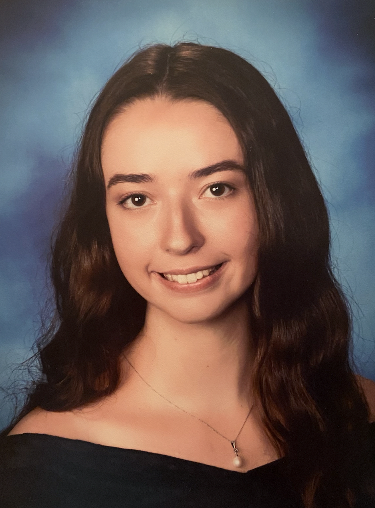

Abigail Warwick
Undergraduate Journalism Student

Experience
Deputy Engagement Editor
The Diamondback
2022-Present
I create social content for The Diamondback across various platforms such as Instagram, Twitter, Facebook, and Reddit. I also analyze the publication’s engagement with their audience in order to more effectively produce content and news.
Social Media Chair
Fidos for Freedom at UMD
2021-Present
I make social media posts for a campus chapter of a nonprofit that trains service dogs. I engage our followers and club members to participate in fundraising events that will finance raising service puppies.
Freelance Writer
Her Campus
2022-Present
I write articles on fashion and lifestyle for the Her Campus chapter at the University of Maryland.
Education
- Bachelor of Arts, Multiplatform Journalism, University of Maryland in College Park, expected 2025
Skills
- Basic French
- Content creation via Adobe Photoshop, Lightroom, Bridge, InDesign & XD, Canva, MailChimp and Meta Business Suite
- Proficiency in Microsoft Office, Google Workspace, & Slack to communicate
- Social Media Management & Audience Engagement
Contact Me